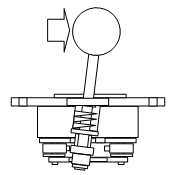
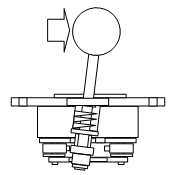
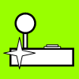
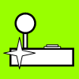

Joystick Engagements and Restrictors
A big factor in taking advantage of a joystick comes from how well the directional commands are distributed in the area of joystick movement. If some regions are excessively large (and therefore others too small), your accuracy in quickly hitting the proper region, or in hitting the right series of regions, is going to suffer. Ideally, each of the utilized directions should have a significant-sized region, and the regions should be well-proportioned and centered where they are intuitively expected by the player.
Obviously, some general precision in the joystick is needed for this to happen to begin with (this is discussed in the joystick attributes section). The neutral needs to be well-centered, the switches well-spaced and proportional and centered, and the opposing restrictor edges equally distanced from neutral.
Beyond precision, the factors in accomplishing good distribution are the engage distances determined by the joystick actuator and switch structure, and the throw distances determined by a restrictor gate or the structure of the joystick.
Joystick Movements
 

Images: Joystick cross section positions in series: Neutral; Deadzone; Engage; Throw
Neutral
Neutral is the place where the shaft stands when not touched, ideally midway between each opposing direction.
Deadzone
The deadzone is the space between the switches where no directions get engaged (including neutral).
Engage
An engage happens when one or more switches are pressed. Engage distance refers to the distance/angle between neutral and the engagement of a given switch or set of switches. A shorter engage distance means a smaller deadzone and a larger engage distance means a larger deadzone. The engage distances are determined pretty much by how the joystick is manufactured with the placement of the switches and sizing of the actuator(s).

Images: Joystick engagement areas: Happ Super; Happ Competition; Sanwa JLF (gate removed); Seimitsu LS-32 (gate removed)
Engage zones are areas where one or more switches are engaged. These zones are determined by the engage distances, and by the size, shape, and placement of the restrictor.
Throw
The throw is the place where the joystick gets stopped in a particular direction. Throw distance is the maximum distance/angle the shaft can be moved in a particular direction. The edge surrounding the movable area of the joystick (all the throws) is composed by the restrictor. Restrictor gates specifically shorten and redistribute the throw distances.
Directional Settings and Restrictors
Directions (X-Way)
Directional settings can be described from two perspectives: gate or mode. They can be based on the tendencies given by the restrictor (x-way gate), or based on the settings of the joystick or game determining what commands or combinations of commands are available (x-way mode). Some examples of gates include octagonal described as 8-way, and plus-shaped described as 4-way. Some examples of modes include Space Invaders only recognizing left or right commands for 2-way, and the Happ/IL Super Joystick being set to the large side of the actuator for 4-way.
Images: Joystick directional attributes: 2-Way horizontal; 2-Way vertical; 4-Way standard; 4-Way diagonal; 8-Way
Settings that emphasize a combination of left, up, right, or down to form diagonals are 8-way. 49-way and pretty much any number above 9-way (usually a squared odd number) are used by analog joysticks.
8-Way
In the following images, the shape represents the restrictor gate, the thick lines represent engage boundaries, and the thin lines represent equal division along the edges of the gate (which also divide area equally, even on the square). Simple joysticks use four switches arranged in a square, so there are four engage boundaries arranged in a square. The center area is the deadzone, the areas bordering it are single-direction (primary) engage zones, and the remaining are double-direction (diagonal) engage zones. Using a bit of math, percentages are labeled showing what fraction of the total area is filled by each engage zone.
Images: Circular restrictor with the throw areas distributed equally (45 degrees); Octagonal restrictor with the throw areas also distributed equally; Square restrictor with the engage zones distributed equally
There are three main choices for restrictor shapes in 8-way play: circular, octagonal, and square. With both circular and octagonal restrictors, the spacing of the engages is usually based toward equal spacing along the restrictor (the throw areas). With square restrictors, the spacing of the engages is usually based toward equal neutral and engage zone sizes (a nine square grid of equal sizes). Note, however, that most joysticks are not precise to these goals.
It can be difficult to balance the size of each direction's throw edge with the size of each direction's engage zone when eight directions are created using only four switches. With a circular or octagonal gate, you can easily divide the throws equally, but the engage zones for diagonals are going to suffer. With a square gate, you can easily divide the engage zones equally, but the throws are going to be twice as long on the diagonals.
Even modifying the engage distances to give better throw or engage zone sizes can make problems. If you try to give bigger engage zones to the diagonals, the deadzone will shrink and cause new problems. If you try to give more throw size to a certain direction, other engage zones are going to shrink.
But the square gate has some advantages. It is not difficult to hit the primary directions (up, down, left, and right) as they compose all the borders around the deadzone, and the diagonal directions are easy to hit because they have large throw sizes. While on circle and octagon restrictors, it is a compounding challenge to hit the diagonals when they have no edges on the deadzone, small engage zone sizes, and only an equally-sized region of throw. The square gate assists in finding the diagonals more easily and accurately, while single directions are easy enough because they surround the deadzone.
There is a contradiction to having a square set of switches with a circular restriction in engaging them. The glory of the square gate is the balance of equally-sized engage zones with the equally-sized combined edges of the deadzone and throws for each direction. The square gate best-accommodates the diagonals. This is why high-quality parts manufacturers generally stock their joysticks with square gates.
For circular and octagonal gates, medium to far throw distances are necessary so that the diagonals can be located easily. These gates are usually manufactured to have these larger throw distances.
The best use of circular and octagonal gates is for play with the stick constantly along the edges or with sparsely needed diagonal movement. If you do not tend to hold your joystick at the edges all the time, the square should be better for you.
Transitioning to a square gate can take a little time and practice. You should try to understand the structure and goals of the square, and learn to use a gentle touch. The ability to spin the joystick around all directions using a square gate can be just as easily done as on a circle.
4-Way
There are three main choices for restrictor shapes in 4-way play as well: circular, rhombus, and plus. Circular restrictors, for the most part, use the same spacing as in 8-way (an exception is the Super with a flipped actuator). Rhombus restrictors use the spacing of the square, the throws are just rotated 45 degrees. The plus restrictor is much like the rhombus, but the diagonals are covered so they are physically inaccessible.
Images: Equally-sized engage square gate turned to rhombus; Plus-shaped gate designed with semi-circles attached to a square made of engage borders; 49-way gate (analog)
The two main factors in restrictor choice for 4-way games are the ability to hit accurately the four directions and the potential interference caused by hitting diagonals. The comparison between the ease in hitting the directions is easy enough: the plus shape is best because it is straight-forward, the rhombus is second best because it helps decently, and circle third best because the guiding is mild. This is the best order of quality when looking at interferences as well.
With interference, a big question is how does the game or joystick interface regard events of two simple directions being engaged at the same time? Some recognize the last-engaged direction, others the first; some remove recognition of previously or newly also-engaged directions, some do not; some remove all engagement recognitions when more than one are engaged at once.
The best example of a game where diagonals can be a problem is Pac-Man. The game recognizes the last of the four directions newly-engaged in choosing the direction of movement. Say you are turning right, but you accidentally clip the up switch after engaging right. Up will be the saved direction because it was last engaged. So you try to fix this by rotating the stick out of the up-right diagonal into only the right engagement. You would intuitively think this would fix the problem and make right the new direction. But right was engaged the entire time and it is not a new command. So up is still the recognized movement even though you are specifically holding right and only right.
The example shows how many 4-way games can have problems with diagonal commands. The best thing that can be done about diagonals is to avoid them all together. So, again, the plus gate is best because it guides to the four directions well and outright does not allow two directions to be engaged at once. The rhombus is second best because it has some guidance for the needed directions, but it still allows diagonals to be engaged (an exception to this is the Sanwa JLW).
Do not worry about difficulty in swinging the stick between directions using a plus-shaped gate either; if the gate is contoured (as it should be), changing directions is smooth and easy and not like using a car's gear-shift.
2-Way
The main 2-way restrictor is bar-shaped. But restrictors of most shapes work well for 2-way because games using it only recognize the two opposing directions and ignore the other two. You cannot simultaneously engage opposite directions on the joystick, so the interference problems like those in 4-way are not present. The 2-way restrictors enhance feel and make sure you hit the easily engaged two directions.
Images: Horizontal gate made from blocking up and down on the plus-shaped gate; Vertical gate made from blocking left and right on the plus-shaped gate; Conceptual eight-switch gate (obviously not very practical)
Restrictor Availabilities
As noted in the joystick models section, Happ and many other brand joysticks do not use restrictor gates and are classified as circularly restricted because that is their structure. The square/rhombus restrictor gate comes stocked with Sanwa joysticks with circular or octagonal and bar-shaped gates also available. Seimitsu joysticks (excluding the LS-56) come stocked with square, plus-shaped, and bar-shaped gates.


 



{kind=link}
{kind=link}
{kind=link}